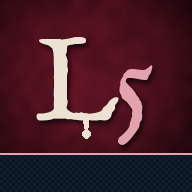
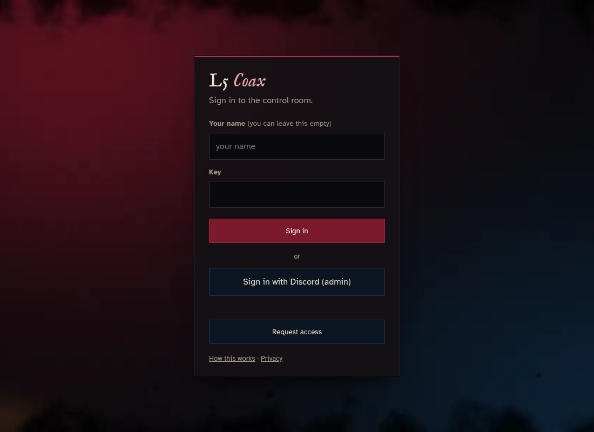

Chat, in character
Mention her or DM her and she answers. Moods — Default, Chill, Chaotic, Sleepy, Hype, or Sassy — change how she talks. In the panel, a live feed lets you reply as L5.

L5 CoaxPrivate Discord companion
L5 Coax talks in your servers and DMs, runs events and go-live posts, and shuts down obvious scams. She is not listed for public invite. Julian approves every panel key.

What she does
These are the features that actually ship in L5 today — from the bot itself and the official guide. Nothing here is a promise of a public bot or of numbers we don’t publish.
Mention her or DM her and she answers. Moods — Default, Chill, Chaotic, Sleepy, Hype, or Sassy — change how she talks. In the panel, a live feed lets you reply as L5.
Status, features, scheduled posts, and logs live in a signed-in dashboard. You get in with a key Julian issues, or by requesting one from the sign-in page.
Mods can type !event 10/31 7pm … or “remind everyone friday 7pm…”. She posts at that time and can ping an opt-in Events role. Anyone can list them with !events.
When a configured Twitch stream starts, she posts once in the channel you pick and pings people who opted in. A drop and reconnect does not send a second announcement.
She deletes obvious fake Nitro/Steam gift links, unauthorized @everyone-with-a-link, and the same message blasted across channels, then times the sender out. A separate anti-raid shield watches for mass bans, channel deletes, and bot raids.
Custom command triggers, reaction roles, welcome messages, and scheduled or repeating posts — all from the Features tab in the control room.
Control room
The panel is the same one operators already use: moods, a live chat feed, events, go-live, and safety tools. Sign-in is a key, not a public dashboard. If you don’t have one, Request access and Julian decides.
In the server
Talk to her in a channel or a DM. Schedule a stream night in plain language. If someone posts the usual fake-gift scam, she handles it and writes it down in the mod log — without touching admins or mods.
Commands
This list is taken from L5’s own !help and the official guide. Custom triggers you add in the panel show up at the bottom of !help on that server.
Lists built-in commands, plus any custom ones on that server.
Dice. Default is 1d6; up to 20 dice.
Heads or tails.
A classic magic-8-ball reply.
Chooses one option.
Posts a poll with reactions. A question alone gets thumbs up/down.
Pings you later (s/m/h/d, up to 7 days).
Shows that user’s avatar, or yours.
Join date and roles.
Member, channel, and role counts.
Deletes recent messages. Mods only (Manage Messages)
Lists upcoming events. Anyone
Schedules a post. “remind everyone friday 7pm…” also works. Mods only
Cancels one, using the code L5 gave you. Mods only
Asks Julian for a panel key. Also available as /requestlogin.
DMs you the panel and guide links. Also !panel and !guide.
/privacy is a short, in-Discord note on how L5 treats chats.
Getting started
If she is already in a server you share, type !requestlogin. Otherwise open Request access on the sign-in page and include your Discord user ID.
Julian reviews the request. If he approves it, the panel key is sent in a Discord DM. It is never shown in the browser.
Open the control room and sign in, or type !help in a server she is in. The guide walks through the panel in plain language.
L5 is a private bot. There is no “Add to server” link. Request access, or sign in if you already have a key.